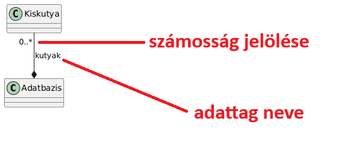

Házi feladat tippek
Nagyházi linkek:
kiírás, ötletek, pontozási útmutató, példa nhf
Kompozíció és adattagok
Ha A tartalmazza B-t, akkor nem kell A-ban egy B típusú adattag ÉS kompozíció a kettejük közt. Elég a kompozíció és annak elnevezése:
Emellett érdemes jelölni a számosságot: min_amount .. max_amount. A végtelent a * jelöli.
A példán egy kutyákat nyilvántartó adatbázis példa látható: 
HF tesztelése, feltételes fordítás
A JPorta a házikat C++17 módban, -Werror -Wall -pedantic warning flagekkel fordítja.
A JPorta definiálja a CPORTA makrót, ennek segítségével lehet kódot csak JPortán, vagy csak nem JPortán fordítani:
#ifdef CPORTA
//ez csak jportán fut
#endif
#ifndef CPORTA
//ez csak akkor fut, ha nem JPorta fordította
#endif
//kető egyben (ifelse)
#ifdef CPORTA
//csak jporta
#else
//csak nem jporta
#endif
Input és output mockolás
Tegyük fel hogy van néhány már elkészített teszt makrónk. Ilyeneket lehet pl a gtest_lite felhasználásával szerezni.
EXPECT_EQ: egyenlőséget vár el a két argumentuma köztEXPECT_THROW: kivételt vár
Ha azt szeretnénk tesztelni, hogy jól reagál -e adott inputra a program, akkor van két opciónk:
- Standard inputról olvasunk egy egységtesztben: ezt nem szeretjük
- "Mock" -olunk egy inputot, ezt szokás csinálni
Ehhez az std::stringstream típust fogjuk használni. Ez hasonló, mint az eddig megismert standard IO streamek. A stringstream egy belső karaktertömbbe ír és onnan olvas. Tetszőlegesen írhatunk bele és olvashatunk is belőle, nagyon hasznos, könnyen lehet vele pl. szám > string konverziót végezni. Az sstream standard headerben található.
Most egy egyszerű kétdimenziós vektorhoz írunk két tesztet:
std::stringsteam mocked_input;
mocked_input << "1, 2"; //beletesszük az adatokat az elvárt formátumban
vec2 v;
mocked_input >> v; //kiolvassuk a vektorba az adatokat
EXPECT_EQ(vec2(1, 2), v);
Most pedig egy teszt, ahol szándékosan rossz formátumot használunk:
std::stringsteam mocked_input;
mocked_input << "1| 2"; //beletesszük az adatokat szándékosan rossz formában
vec2 v;
EXPECT_THROW(mocked_input >> v); //hibás volt a bemenet, ezért kivételt várunk